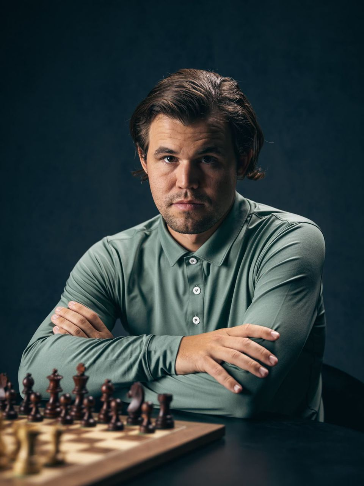
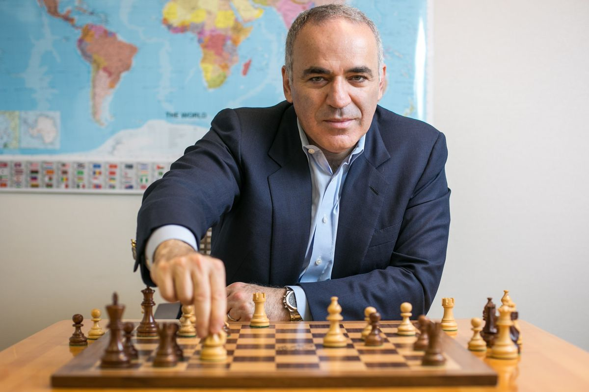
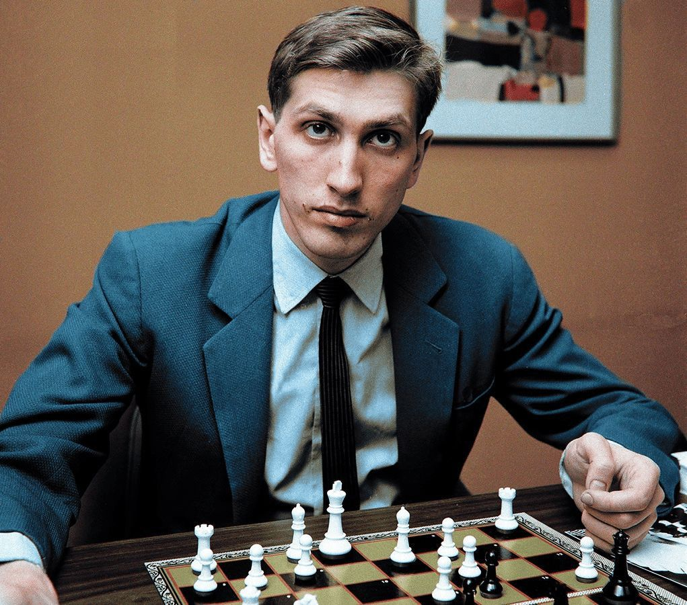
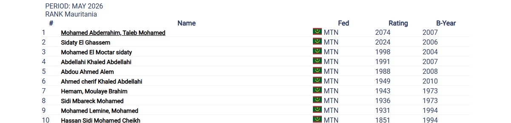

Découvrez les joueurs qui ont marqué l'histoire par leur génie.

Le Mozart des échecs. Connu pour sa précision informatique et son endurance légendaire.

L'Ogre de Bakou. Son style agressif a dominé le monde des échecs pendant plus de 20 ans.

Le génie solitaire. Il a mis fin à la domination soviétique lors du "Match du Siècle".
